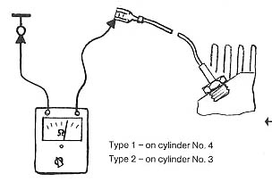

Resistance of temperature sensor in cylinder head too high
- Run engine until oil temperature is above 80 degrees C (170 degrees F)
- Pull wire off temperature sensor
- Connect ohmmeter
Specified resistance: Less than 300 ohm

Resistance OK Resistance is well above specified value